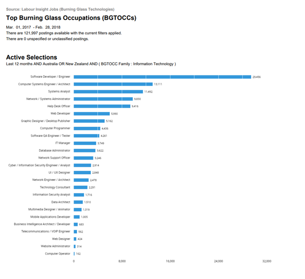
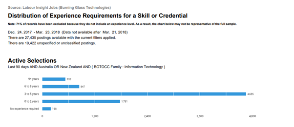
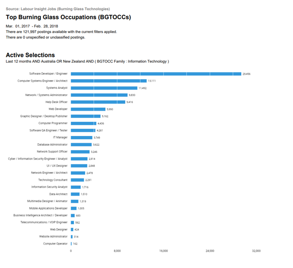
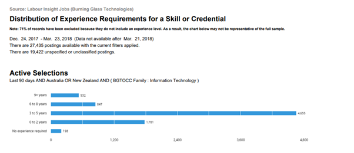

Introduction

 



The information included in this section has been derived from a number of sources, as mentioned in the references. Initially the Burning Glass data supplied as part of the assignment (above) has been interpreted with regard to the team’s ideal jobs. Further to this, an exploration of the current state of the industry has been carried out, with particular attention being paid to the transformative changes in the industry in the years since the Burning Glass data was published.
The data paints a picture of a thriving industry which is growing in most areas, with particularly strong growth being apparent in the areas of software development. The shift to cloud computing has seen big changes in how networks are being configured, and the growth of data centres is likely continue to lead to a rapidly changing future for network engineers. The data centre services market is, in fact, projected to grow from $48.9 billion in 2020 to $105.6 billion in 2026. (Mordor Intelligence, 2022) As this transition towards cloud based infrastructure continues it is likely that network engineering positions will continue to see high levels of demand, with many opportunities arising within the tech giants that provide this infrastructure.(Kyler Middleton, 2019)
Each group member has reviewed the interpretation of the data and reflected on their choice of career path, with opinions and comments included at the conclusion of the summary.